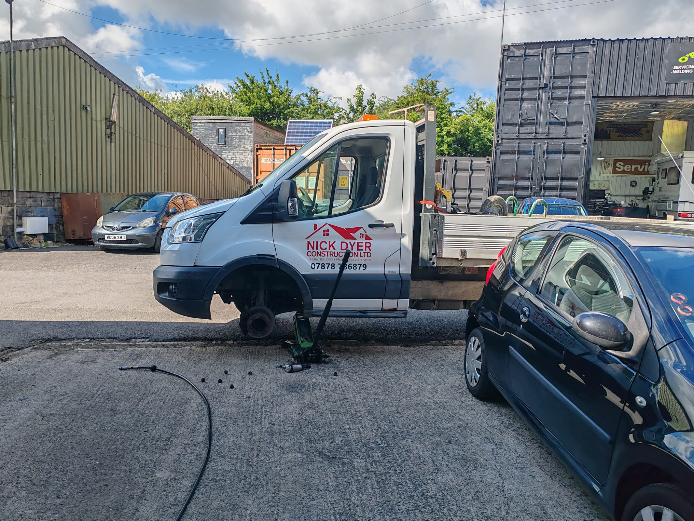
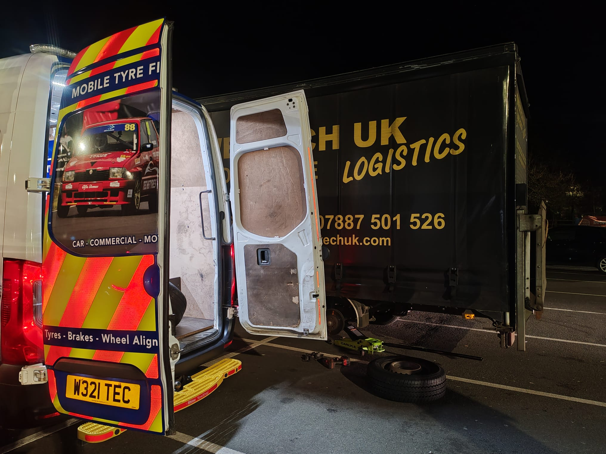

Keep your fleet moving. Mobile tyre fitting, replacement and servicing for vans, HGVs and commercial vehicles across Wiltshire and beyond. We come to your depot or yard — minimising downtime.

Tech & Tyres provides dedicated commercial fleet tyre services across Wiltshire, North Somerset and Bristol. For any business that relies on vehicles, downtime is lost revenue. Our mobile fleet service keeps your vans, trucks and commercial vehicles on the road — serviced at your depot, yard or site.
Whether you run a single transit van or a fleet of HGVs, we build a service schedule around your operations — not around us.
All sizes from car-derived vans to large goods vehicles. Quality brands at competitive fleet pricing.
Regular tyre checks and replacements scheduled around your business operations to minimise disruption.
Breakdown tyre replacement for commercial vehicles across Wiltshire. Fast response, any day.
Tread depth monitoring, rotation schedules and proactive replacement recommendations.
We come to your premises — depot, yard, construction site, distribution centre. No need to send vehicles off-site.


We work around your schedules — evenings and weekends available for fleet contracts.
All work carried out to the standard your fleet compliance requires.
Service records, tyre inspection reports and compliance documentation provided for every vehicle.
Simplified invoicing and account management for fleets of all sizes. Call to discuss.
.png)